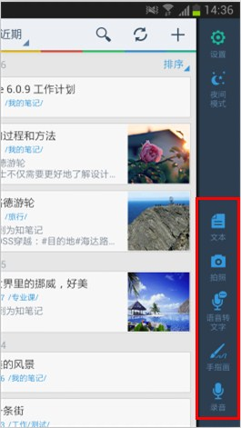
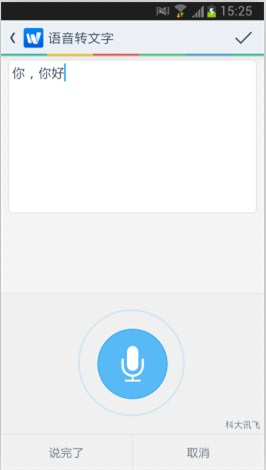
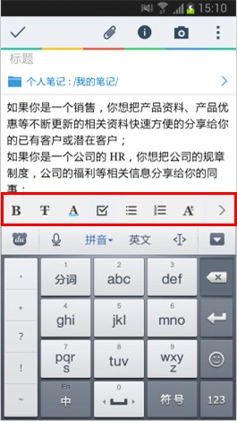
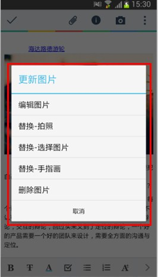
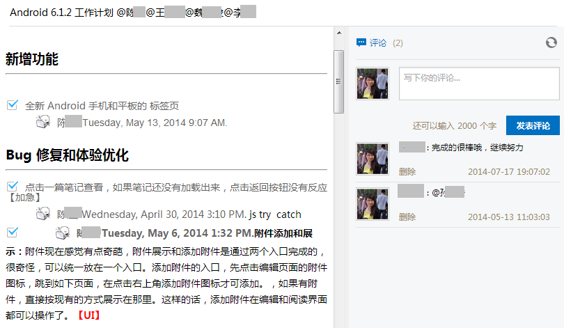
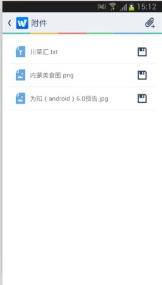
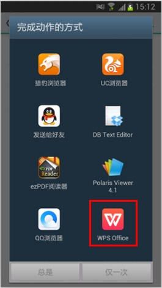

为知笔记（ android版）为您提供多种新建类型，包括：文本笔记、拍照笔记、录音笔记、手指画笔记、富文本笔记，也可以直接将网页内容、微信内容、微博内容收藏到为知笔记。
笔记创建后会保存到为知笔记，也会自动同步到云端。
在笔记列表页，点击操作栏右上角的“+”号，创建新笔记。
在快速区，点击右下角的“新建区”的按钮，创建不同类型的笔记。在任何一个笔记页面，从右边缘向左滑就会滑出快捷区，选择不同类型的新建按钮创建新笔记。


阅读笔记时，点击底端的编辑图标，进入编辑页面
在新建或者编辑页面，可以设置字体的属性：粗体、删除线、字体颜色、有序列表、无序列表、字号。
字体样式工具： 粗体、删除线、字体颜色
列表工具：无序列表、有序列表
字号：可以按自己需求调大或者缩小字号大小

点击左上角的对勾，保存修改；或者点击。。。里的放弃编辑，取消修改
编辑内容
编辑文字
编辑图片
添加图片：可以插入照片（快照、相册图片）在光标所在位置
编辑图片：在编辑界面，点击图片会弹出编辑图片的选项，可以对已有图片执行圈圈点点的操作，也可以更换已有图片，也可以删除已有图片 
添加附件
插入手指画
修改笔记信息
1.待办清单介绍
对于个人用户来说，你可以用待办清单记录你每天计划做的事情，计划完成的工作任务等等。
对于团队协作来说，待办任务的完成状态是个结果性的标识，最终能够对协作和团队成员有重要帮助的，还是任务的执行过程，包括方案的选择和这样选择的原因，这些才是对团队最有价值的东西。所以为知笔记的待办清单更强调任务的一个执行过程。

2.如何使用待办清单进行协作
①创建待办清单笔记，在编辑界面，选择 checkbox 按钮，创建待办清单 （个人笔记按这个步骤创建待办清单列表即可） ②通过标题@相关人员，发送任务通知消息 ③利用多人编辑，评论记录工作过程 ④任务清单完成后，勾选复选框，自动记录执行人和执行时间
内链接
内链接：笔记和笔记直接的关联
Android 端支持内链接：如果您在 Windows 端或 iOS 端在笔记里添加了内链接，那么在 Android 端是可以直接跳到对应笔记查看的。
Android 端暂不支持创建内链接，可以查看内链接
外链接
如果您的笔记是网页笔记，笔记内带有链接，那么在手机端可以点击链接查看对应网页内容。
手机端暂不支持创建外链接，您复制链接地址，粘贴到笔记内，暂不支持转换成可点击链接形式。
为知笔记 Android 端本身不支持对附件的编辑，如果您想在手机上编辑存到为知笔记的附件，您可以按以下方式执行
选择可以直接编辑对应文件的应用程序打开附件，比如附件是 office 文件，可以选择 WPS 打开附件
查看附件并在对应程序中编辑附件
点击保存，会自动保存到为知笔记里
 
以上方法执行过程较麻烦，建议尽量减少在手机端对附件的编辑操作。